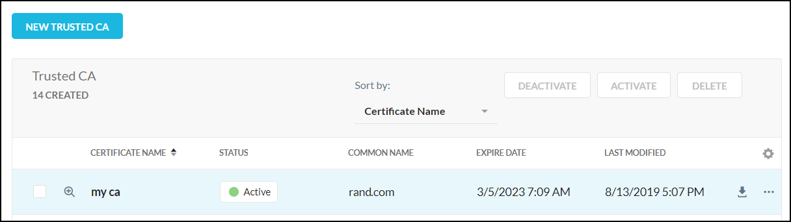
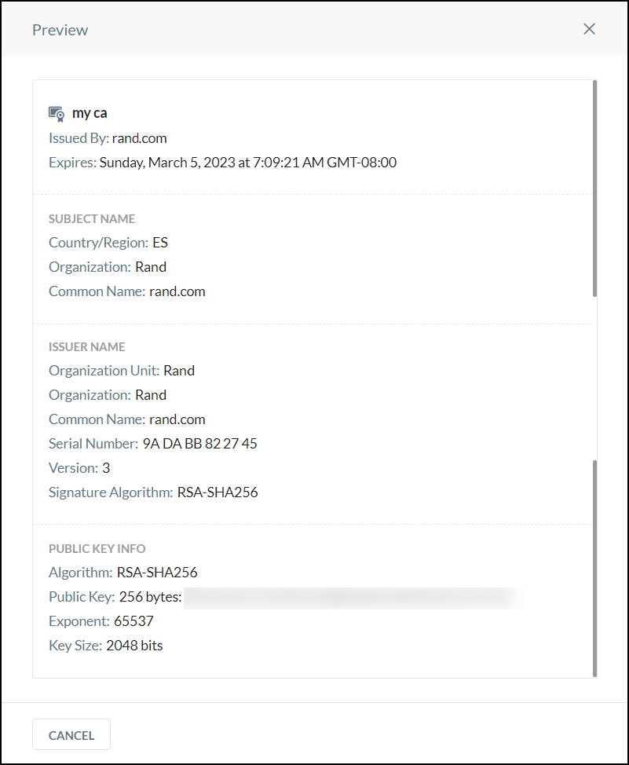
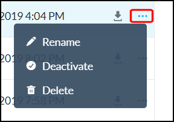
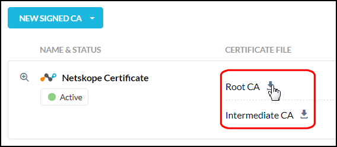
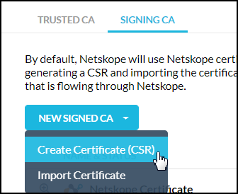
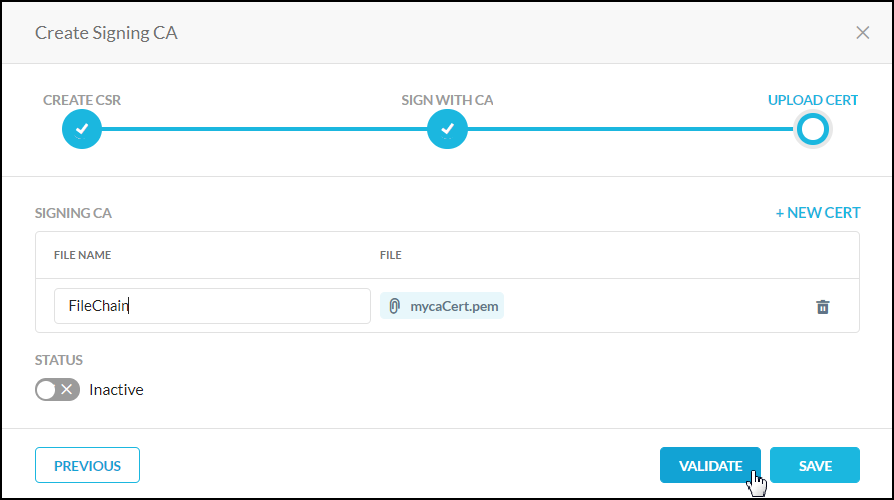
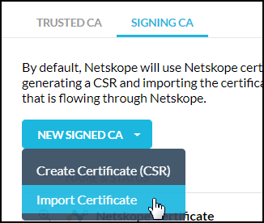
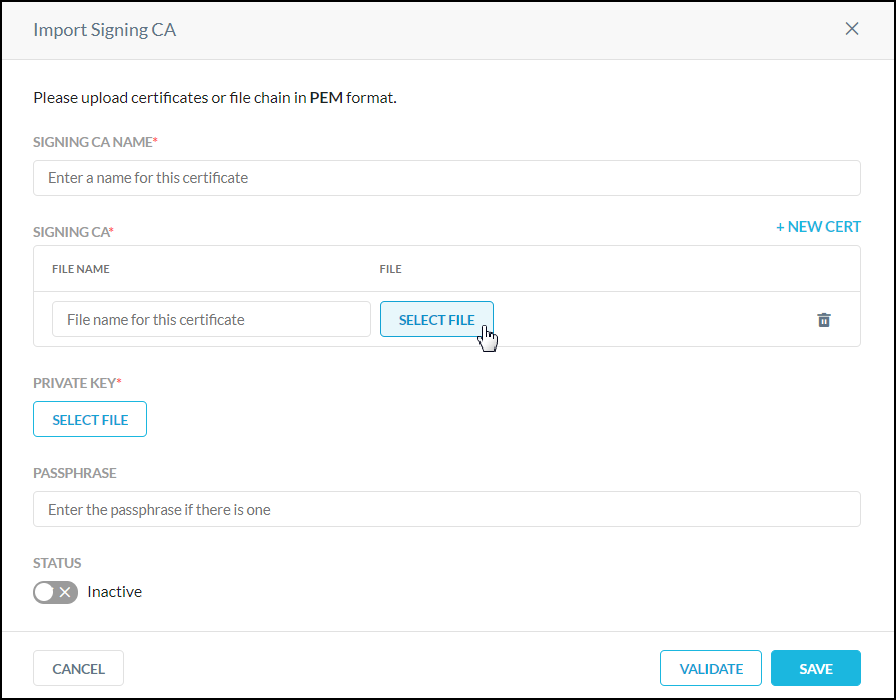
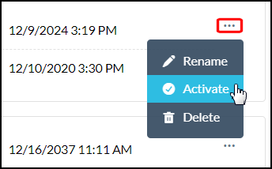

Certificates
Netskope certificates are used by default to trust devices. The Netskope Root and Intermediate CA certificates can be downloaded from the Netskope UI. Or you can use your own signing certificate that is issued by a CA by generating a CSR and importing the certificate, or directly importing your certificates and private key.
You can also use your own trusted Root certificate instead of one from an authorized CA provider. For example, if you have apps only used by internal employees, you can issue a corporate self-signed root CA.
The following sections provide instructions for using trusted and self-signing certificates. To begin, go to Settings > Manage > Certificates.
Trusted Certificates
By default, the Netskope platform blocks connections to sites with untrusted certificates. The trusted certificates feature provides the ability to upload private, custom, and uncommon CAs to the Netskope platform. This allows you to ensure that Netskope trusts sites that are signed by a CA that is either private, or one that’s is not in our common CA store.
Prior to this feature, the only way to make this work was to allow untrusted certificates, which was a global setting (Error Settings under Steering Configuration), and would weaken security if enabled. The uploaded trusted certificates only apply to the tenant where the certificate is uploaded.
Go to the Trusted CA page and click New Trusted Cert.

Enter a name, click Select File, and upload your certificate in PEM format.

Click Validate.

To add another certificate, click the +New Cert link.
When the Valid Certificates message appears, click Save.

The certificate you just added appears on the page.
|  |
The certificate name, status, common name, expiration date, and last modification date are shown in the table . Click the Preview icon  to see a detailed view of the certificate.
to see a detailed view of the certificate.
|  |
To customize the columns on the page, click the gear icon  and specify the columns you want to see.
and specify the columns you want to see.
To sort certificates shown on the page, use the Sort By dropdown list.
 |
To download, rename, deactivate, and delete certificates, use the buttons above the listings or use the popup beside each listing.
|  |
Signing Certificates
The Signing CA page enables you to decrypt SSL traffic using these methods:
Use the Netskope Root and Immediate certificates. Download these certificates so you can upload them to the end-user device trusted store.
Use your own signing CA certificate. This is a licensed feature and must be enabled by Netskope. You can use your signing CA certificates these two ways:
Create a Certificate Signing Request (CSR) and get it signed by your trusted CA, and then upload it to Netskope.
Import a CA certificate chain with the corresponding private key.
All three processes are described in the sections below. First, review these factors about using signing certificates.
The Netskope certificates are the default active certificates. Multiple custom certificate sets can be created, but only one certificate set can be used (be active) at one time. Make sure the active Root certificate is deployed on your end-user devices.
To begin, go to the Signing CA page.
 |
The certificate name, status, common name, and expiration date are shown in the table. Click the Preview icon to see a detailed view of the certificate. Once familiar with the Signing CA page, proceed to the sections below.
Download Netskope Certificates
Locate the Netskope certificate listing and click the icons to download each type of certificate.
|  |
Create Certificate Signing Request (CSR)
You can create a Certificate Signing Request (CSR), get it signed by your trusted CA, and then upload it to Netskope. You can upload the Root and Intermediate CA certificates (one per file), or upload the entire certificate chain (in a single file), in PEM format.
Click New Signing CA and select Create Certificate CSR
 Enter these parameters:
Signing CA Name: Required. This name appears in the Name and Status column of the Signing CA page.
Common Name: Required. This name appears in the Common Name column of the Signing CA page.
Organization: The full legal name of your organization including the corporate identifier. This field is optional.
Organization Unit: Your department such as "Information Technology" or "Information Security". This field is optional.
Email Address: The email address of your organization. This field is optional.
Country: The official two-letter country code (i.e. US, CH) where your organization is legally incorporated. This field is optional.
State: The state or province where your organization is legally incorporated. This field is optional.
City: The locality or city where your organization is legally incorporated. Do not abbreviate. This field is optional.

Key algorithm and key size cannot be changed. When finished, click Save and Continue.
Copy or download the CSR and get it signed by your CA. When you have it, click Next.
Enter a name for the certificate file, and click Select File. Locate and upload the file. If you are uploading individual files instead of a certificate chain, click + New Cert to upload subsequent files.
 When finished, click Validate. After validation is complete, you can use the Status toggle to make the certificates active, or do so later on the main Signing CA page. Click Save.
Import Certificate
You can import signing certificates from your CA along with the associated private key.
Click New Signing CA and select Import Certificate.
 Enter a signing CA name and a file name, and then click Select File. Upload either the CA Root and Intermediate certificate files individually or the certificate chain in a single file. To upload subsequent certificate files, click + New Cert, and then enter a file name and click Select File again.
 For Private Key, click Select File to upload your private key, and if a passphrase is used, enter it in the Passphrase text field.
When finished, click Validate. After validation is complete, you can use the Status toggle to make the certificates active, or do so later on the main Signing CA page. Click Save.

To use your custom certificates (if not already active), first add them, click the  icon to the right of the certificate, and then select Activate.
icon to the right of the certificate, and then select Activate.
|  |